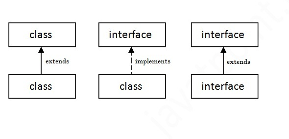

Interfaces
Em Java, uma Interface é similar a uma Classe, no entanto, só podem conter contantes, métodos abstratos, métodos estáticos, métodos default e tipos aninhados
Interfaces
- Objetivo: deixar explícito os serviços (métodos) que uma classe implementa
- Declaradas com a palavra chave interface
- Não podem ser instanciadas
- Não contém métodos construtores
- Assinaturas dos métodos sempre contém visibilidade public, não necessariamente declarados implicitamente
- Uma interface pode estender o comportamento de outra interface
- Classes podem implementar uma ou mais interfaces ao mesmo tempo
Relações de Interfaces

Interfaces
- Interfaces são um CONTRATO
- Classes que implementam determinada interface, devem obrigatoriamente implementar os métodos desta interface
Exemplos da Biblioteca Padrão
- Serializable
- Comparable
- Cloneable
- Runnable
- Iterable
Definindo uma Interface
public interface Animal{
public abstract void comer();
public abstract void andar();
public abstract void falar();
}
Implementando uma Interface
public class Cachorro implements Animal{
public void comer(){
System.out.println("Cachorro comendo...");
}
public void andar(){
System.out.println("Cachorro andando...");
}
public void falar(){
System.out.println("au au au");
}
}
Exercício 1
- Implemente uma hierarquia de operações matemáticas
- O programa deve conter as classes:
- Operação Matemática (interface)
- Soma
- Subtração
- Multiplicação
- Divisão
- Todas as classes devem conter o método calcula
Exercício 2
- Implemente uma hierarquia de classes que represente os funcionários de um escritório
- O programa deve conter as classes: Gerente, Assistente e Vendedor
- A classe Funcionário deve conter um método abstrato double calcSalario
- A classe Funcionário deve conter os atributos nome, matrícula e salárioBase
- Os salários são calculados da seguinte maneira
- Gerentes recebem 2 vezes o salárioBase
- Assistentes recebem o salárioBase
- Vendedores recebem o salárioBase mais uma comissão que deve ser passada por parâmetro ao método construtor
Exercício (Entregar)
- Implemente uma hierarquia de formas geométricas:
- FormaGeometrica:
- Forma bidimensional
- Círculo
- Quadrado
- Triângulo
- Forma tridimensional
- Formas bidimensionais devem conter os métodos:
- calculaArea
- calculaPerímetro
- Formas tridimensionais devem conter os métodos:
- calculaArea
- calculaVolume
Agradecimentos
- Professor Raphael de Souza Rosa Gomes (UFMT)
- Professora Karen Figueiredo (UFMT)